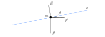

In figura è rappresentato lo schema di corpo libero relativo al carrello, in cui l’asse \(x\) ha la stessa direzione della rampa:

Le componenti delle tre forze lungo l’asse \(x\) sono
\[R_x = 0 \qquad P_x = -mg \sin \theta \qquad F_x = F \cos \theta\]e, di conseguenza, il valore della forza risultante lungo \(x\) risulta essere
\[R_x + P_x + F_x = -mg \sin \theta + F \cos \theta\]A questo punto, scriviamo la seconda legge di Newton e ricaviamo il valore di \(F\):
\[\begin{align*} -mg \sin \theta + F \cos \theta &= ma\\ & \\ \longrightarrow \quad F &= \frac{m(a + g \sin \theta)}{\cos \theta} \end{align*}\]